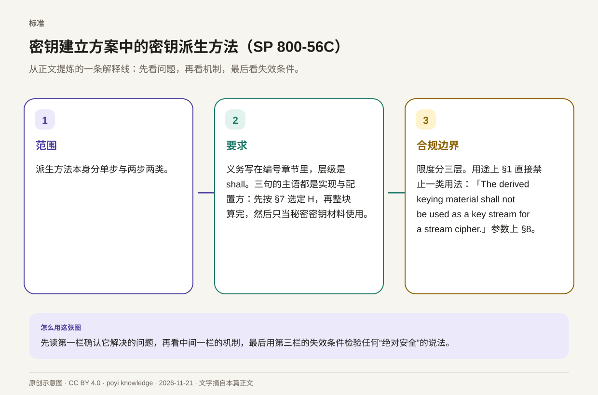
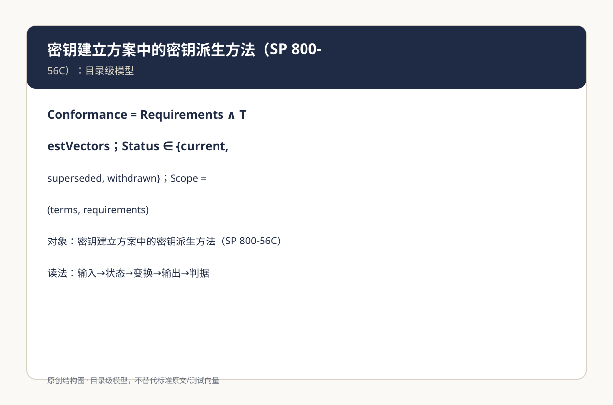

原理与机制
标准：密钥建立方案中的密钥派生方法（SP 800-56C Rev.1）（Recommendation for Key-Derivation Methods in Key-Establishment Schemes (SP 800-56C Rev.摘要用一句限定对象与来源：「This Recommendation specifies techniques for the derivation of keying material from a shared secret established during a key-establishment scheme defined in NIST Special Publications 800-56A or 800-56B.」。§2 说明它给出两类做法：「This Recommendation specifies two categories of key-derivation methods that can be employed, as required, as part of a key-establishment scheme specified in [SP 800-56A] or [SP 800-56B].」它的输入是协商得到的共享秘密，不是口令，也不是既有密钥；派生方法本身分单步与两步两类。

为什么重要
§1 交出缺口所在：公钥密钥建立跑完只得到共享秘密，此时「a key-derivation method may be required to obtain secret cryptographic keying material.」§2 解释两步做法为何分两步，第一步只是将共享秘密压成一把派生密钥：「Randomness extraction, to obtain a single cryptographic key-derivation key from a shared secret generated during the execution of a key-establishment scheme」。协商产出的秘密长度与分布并不适合直接当密钥，故派生步骤不可省。
应用与实例
义务写在编号章节里，层级是 shall。§4 对实现者限定辅助函数的选取：「H shall be chosen in accordance with the selection requirements specified in Section 7.」§7 把它展开为四条硬性选型：「Whenever a hash function is employed (including as the primitive used by HMAC), an approved hash function shall be used.」§1 则限定派生结果的算出与用途：「The keying material derived using these methods shall be computed in its entirety before outputting any portion of it」。三句的主语都是实现与配置方：先按 §7 选定 H，再整块算完，然后只当秘密密钥材料使用。

边界与攻击面
限度分三层。用途上 §1 直接禁止一类用法：「The derived keying material shall not be used as a key stream for a stream cipher.」参数上 §8.2 承认最敏感的一项可以不随机：「This Recommendation does not require the use of a randomly selected salt value.」，§8.3 又把两步法的一种组合排除在外：「At this time, KMAC has not been specified for use in the implementation of a two-step key derivation procedure.」可验证性上，符合性测试一节写明部分要求「may be out-of-scope for CAVP or CMVP validation testing, and thus are the responsibility of entities using, implementing, installing, or configuring applications that incorporate this Recommendation」。
历史与背景
这份副本的版本事实只来自它自己的扉页与横幅：「NIST Special Publication 800-56C Revision 1」与「Recommendation for Key-Derivation Methods in Key-Establishment Schemes」，作者栏「Elaine Barker Lily Chen Rich Davis」；引用行给「Natl.Inst.Stand.Technol.Spec.Publ.800-56C Rev.1, 37 pages (April 2018) CODEN: NSPUE2」，免费获取行后接 DOI 10.6028/NIST.SP.800-56Cr1。顶部废止横幅写「The attached publication has been withdrawn (archived), and is provided solely for historical purposes.」并记「SP 800-56C Rev.1 is superseded in its entirety by the publication of SP 800-56C Rev.2.」。致谢页同时覆盖本版与前任工作：「The authors gratefully acknowledge the contributions on this and previous versions of this document by their NIST colleagues (Quynh Dang, Sharon Keller, John Kelsey, Allen Roginsky, Meltem Sonmez Turan, Apostol Vassilev, and Tim Polk) and by Miles Smid, formerly of Orion Security Solutions.」四段引文合起来是这份副本的版本事实：分册与修订号、标题原文、作者栏、页数与出版月份、以 DOI 给出的免费获取地址，以及它被第 2 版整体取代、仅供历史查阅的状态。
逐步示例与核验
形式模型与复算步骤
[S=\min_i S_i,\quad S_i\in{\text{密钥强度},\text{分组安全},\text{实现安全}}]
密钥建立方案中的密钥派生方法（SP 800-56C Rev.1）的公开参数、密钥/随机数与消息；变量说明：S 为综合安全强度；各分量取最小值，不能只看密钥位数。1.读取标准规定的密钥/分组/模式参数。2.按标准表换算等效强度。3.取最弱分量作为系统强度。边界：公式只覆盖已登记的参数与假设；参数取值、标准版本和实现细节仍以来源为准。
参考出处
- Wikipedia search entry for 密钥建立方案中的密钥派生方法（SP 800-56C Rev. 1）. https://zh.wikipedia.org/w/index.php?search=%E5%AF%86%E9%92%A5%E5%BB%BA%E7%AB%8B%E6%96%B9%E6%A1%88%E4%B8%AD%E7%9A%84%E5%AF%86%E9%92%A5%E6%B4%BE%E7%94%9F%E6%96%B9%E6%B3%95%EF%BC%88SP%20800-56C%20Rev.%201%EF%BC%89
- Handbook of Applied Cryptography (Menezes, van Oorschot, Vanstone). https://www.cacr.math.uwaterloo.ca/hac/